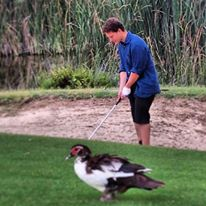
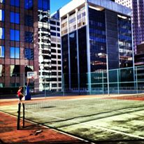
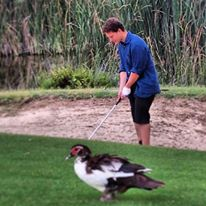
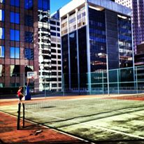
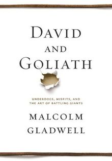
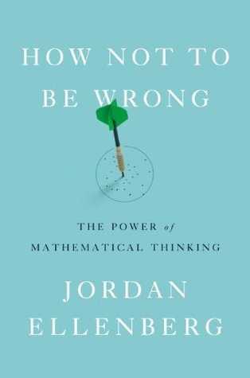
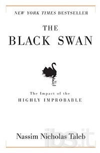
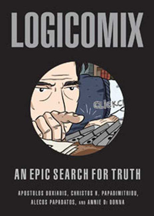
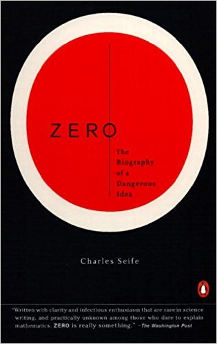

Ebrahim (Abe) Adeeb
About Me:
Statistics major at Simon Fraser University (BC, Canada) graduating January 2018. I'm currently looking for a CO-OP job for the summer term 2017 (April-September). I have interest in scientific methodology and modern statistical methods. I am most interested in public health and technology. I have experience working with geological, geomechanical, and sport data. I am interested in working and gaining experience on survival analysis and modern visualization methods. I have strong programming skills in R, having worked with supervised machine learning algorithms, mostly for kaggle competitions and classes but would love to gain real world application experience. Some of the Machine learning methods I have familiarity with include: Random Forests, Support Vector Machines, Bayesian Model Averaging, and Nearest Neighbour.I have completed courses in SAS, C++, and Python although much of my experiences has been with R. I have extensively used the dplyr library to implement split apply combine (paradigm) methods on a variety of data including food, sports, housing, and beer ratings . I can also produce data visualizations in ggplot2. My Excel skills have been sharpened through a decade of use. Though recently I have used Tableau for data cleaning, organization, and visualization. Tableau helps to stream line many processes, although I completely feel that R is far more useful and trustworthy in the sense of reproducibility.
I created this website to be able to communicate and share my experiences with employers, friends, family, and the internet. Born in Dubai and spent most of my childhood in the middle east. I am the son of a Bahraini father and a Russian mother, and because of my multi-ethnic upbringing I can communicate in 3 languages (English, Arabic, Russian). I was lucky to have travelled the globe as a child and gained insight to a variety of cultures and people which I think allows me to integrate into social groups efficiently. I moved to Vancouver, Canada permanently in 2006. I attended the University of British Columbia where I received a degree in Geological Engineering with a focus on soil and rock mechanics. During my time at university and post- graduation, I worked at a variety of consulting firms that specialized in geology, mining, foundations engineering. I spent much of time on-site at a variety of locations including Northern BC and Siberia. These on-site jobs became less appealing as time went on and I found myself asking what does the future hold? This is where I decided to travel to Europe and Asia. In these travels, I found what I wanted to do. It began with data analytics and visualization as well as Computing science, this later evolved into a fascination with applied mathematics. After a series of unsuccessful application to a series of technology firms, and advice from hiring managers at these firms, I began my journey to get a degree in statistics. Statistics was appealing to me because it allowed me to use tools and skills in a variety of fields without finding myself funnelled into one line of work. As I began learning more about the field my fascination with scientific methodology and technology began to grow and now I find myself more curious than ever with what can be achieved with proper science and efficient computing.
Personal Interests
- Nutrition and lifestyle.
- Sport (Soccer, Golf, Tennis)
- Mathematics (History and Application)
- Travel
- Music
Recent reading list
-  - DAVID AND GOLIATH by Malcolm Gladwell
-  - HOW NOT TO BE WRONG THE POWER OF MATHEMATICAL THINKING by Jordan Ellenburg
-  - THE BLACK SWAN by Nassim Nicholas Taleb
-  - LOGICOMIX AN EPIC SEARTH FOR TRUTH by Apostolos Doxiadis
 - THE SIGNAL AND THE NOISE by Nate Silver
- THE SIGNAL AND THE NOISE by Nate Silver-  - ZERO THE BIOGRAPHY OF A DANGEROUS IDEA by Charles Seife
Please explore the rest of the website, in the resume section you will find my full resume with a link to the pdf version. In the projects section you will find a portfolio of recent projects I have been involved in.
Thank you for visiting!